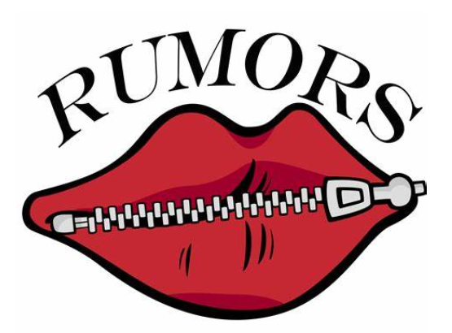

Description
Rumors on the internet have been intensely studied during the last decade, refers to the information not confirmed by the official group and viral on the internet.
Different researchers provide several interpretations of rumor, lt is unverified information spread among the internet.This Unconfirmed information might be factual, partially accurate, or totally wrong as it remains unconfirmed al the time 3 Several factors are available for categorizing rumor by its type, its value (false, unresolved, or true or related to its degree), whether low level or high level. For example, Knapn has characterized rumors according to its psychological viewpoint shown in Table.
Rumors are divided into two categories--long-standing and rumor arising from breaking news. Those rumors circulated for an extensive period and never confirmed true or false are known as long-standing. Rumors arising from breaking news are common, and they deal only with breaking news.
Why Rumors Spread out?
- People Spread Rumors When There’s Uncertainty
- People Spread Rumors When They Feel Anxiety
- People Spread Rumors When the Information is Important
- People Spread Rumors When They Believe the Information
- People Spread Rumors When it Helps Their Self-Image
- People Spread Rumors When it Helps Their Social Status
Case
CGTN apologizes for Premature Report of Scientist's Death
During the G20 summit in Hamburg on July 7-8, 2017, various rumors spread rapidly on social media, particularly Twitter. Among these, five specific rumors garnered significant attention: 1) police using army tanks against protesters, 2) a police officer being permanently blinded by a firecracker, 3) a police raid on the left-wing venue Rote Flora, 4) police using nuclear weapons to deter protesters, and 5) protesters attacking a hospital and emergency room. These rumors were part of the 736,577 tweets collected between July 5-10, 2017, which included 168,799 original tweets and numerous retweets, comments, and likes.
These rumors were promptly debunked by credible sources while the G20 summit was still ongoing. The Hamburg Police Department and the fact-checking unit of Tagesschau, Germany's most trusted news broadcast, played key roles in countering this misinformation. Tagesschau, known for its objectivity and funded by German citizens, along with the police department, used Twitter to disseminate accurate information and correct the false narratives being spread about the events at the summit.
Bad Effects
- Erosion of trust
- Low morale
- Hindering teamwork
- Litigation
- Disciplinary action
Trust is essential to creating a positive, productive work environment. Negative rumors erodes trust.
Excessive gossiping creates a backstabbing environment that can become an unbearable workplace.
Rumors can be detrimental in work situations that require collaboration. When workers discover they are the target of rumors, they are less inclined to want to cooperate with their colleagues who perpetuate the negative talk.
When rumors turns malicious, the individual on the receiving end may view it as harassment.In that case, the next step might be to pursue legal action. A lawsuit that becomes public can become a reputational nightmare for the organization.
Rumors doesn’t always involve personal attacks against others; it can also entail disclosing sensitive or proprietary information to individuals who should not have access to it, especially competitors.